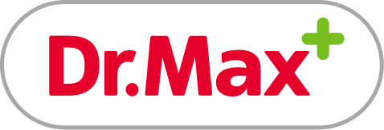

+++
title = "Lekárne Dr.Max - Recruitment specialist - Part Time"
slug = "32"
+++

<div class="container mb-5">
    <div class="row justify-content-around">
        <div class="col-6 col-md-2 mt-3"></div>
        <div class="col-md-8">
            <h1>Lekárne Dr.Max</h1>
            <h2>Recruitment specialist - Part Time</h2>
            <p>
                <strong>Miesto: </strong>sídlime v Bratislave - Digital park a ak nemáme stretnutia v office, vieme plnohodnotne pracovať z domu<br/>
                <strong>Forma: </strong>TPP (polovičný úväzok)<br/>
                <strong>Flexi faktor: </strong>skrátený úväzok - 20hod týždenne, home office podľa potrieb a
                možností<br/>
                <strong>Plat: </strong>750 - 800 EUR/mesiac. Základná mzda na pozícii pri polovičnom úväzku – 20
                hod./týždenne je 750 EUR. K základnej mzde prináleží aj variabilná zložka do výšky 10% kvartálne - 225
                EUR<br/>
                <strong>Očakávaný nástup: </strong>Dohodou<br/>
                <strong>Dátum pridania ponuky: </strong>7.3.2022<br/>
            </p>
            <h2>O firme </h2>
            <p>
                Lekárne Dr.Max vznikli pred 16 rokmi. Naše služby a poradenstvo sú vyhľadávané a využívané na viac ako
                340 miestach po celej krajine.
                Zdieľame spoločné hodnoty, navzájom sa podporujeme, kolegom ponúkame možnosť participovať na spoločnom
                úspechu. Vďaka vzájomnej dôvere má každý priestor pre realizáciu vlastných myšlienok a uplatnenie
                získaných zručností a vedomostí. Dosiahnutie spoločného cieľa je založené na spoločnej tímovosti. Sme
                inovatívni, otvorení novým nápadom, ktoré podporujeme.
                Našou najväčšou hodnotou je viac ako 2000 zamestnancov, ktorých prácu si nesmierne vážime.
            </p>
            <p>
                Dr.Max je v súčasnosti nositeľom v poradí piateho ocenenia Naj Zamestnávateľ v kategórii Lekárska a
                zdravotná starostlivosť.
                Navštívte naše <a href="https://kariera.drmax.sk/kariera-drmax/volne-pozicie/" target="_blank">kariérne webové stránky</a> a
                poďte s nami prinášať jedinečnú starostlivosť!
       
            </p>

            <h2>Náplň práce</h2>
            <p>Aké budú tvoje úlohy?</p>
            <p>* RECRUITMENT & agenda</p>
            <p>Tvojou náplňou práce bude najmä pravidelná komunikácia s kandidátmi, ich priame oslovovanie, telefonické
                kontaktovanie a pohovory, hľadanie nových fungujúcich spôsobov náboru. Budeš zodpovedný/á za náborové
                programy našich kolegýň v regióne aj reporting, preto by si mal/a mať skúsenosti s kompletnou náborovou
                agendou, aby ťa nič nezaskočilo, či aby ti nič neuniklo. Spolupracovať budeš s našimi manažérmi na
                centrále a budovať si vzťahy s kandidátmi a kolegami.</p>
            <p>* EMPLOYER BRANDING</p>
            <p>Aj my chceme byť viac viditeľní (nielen na sociálnych sieťach), preto by ti slovné spojenie employer
                branding nemalo byť cudzie, práve naopak. Chceme verejnosti a potenciálnym kandidátom ukázať, kto sme a
                čo pre našich zamestnancov ako zamestnávateľ robíme. A nie je toho málo. Malú ukážku tejto práce si
                môžeš pozrieť na našom <a href="https://bit.ly/3Hk7gzS" target="_blank">LI profile</a>.</p>
            <p>* SPOLUPRÁCA SO ŠKOLAMI</p>
            <p>Absolventi sú pre nás dôležitou skupinou kandidátov, preto komunikácia a budovanie spolupráce so školami,
                študentskými spolkami ale aj organizácia, realizácia a účasť na prezentáciách a stretnutiach je
                neoddeliteľnou súčasťou našej práce.</p>

            <p>Pozícia je obsadzovaná na polovičný úväzok, počítaj však s tým, že do roka ťa budeme potrebovať na
                plno.</p>

            <h2>Požiadavky</h2>
            <p>Prax v oblasti ľudských zdrojov je dôležitá pre tvoje nabehnutie do procesov. Nábor by ťa mal baviť,
                pretože sa neustále rozširujeme. Sociálne siete by ti nemali byť cudzie a a budovanie vzťahov s
                kandidátmi a kolegami by malo byť samozrejmosťou</p>


            <h2>Ďalší postup</h2>
            <p>V prípade záujmu sa prihlás <a href="https://https://kariera.drmax.sk/kariera-drmax/volne-pozicie/ludia" target="_blank">tu</a>.
            <p>Kontaktná osoba :Ingrid Múčková, +421 910 924 984</p>

        </div>
        <div class="col-md-2"></div>
    </div>
    <div class="row">
        <div class="col offset-md-2 mt-5">{{< back >}}</div>
    </div>
</div>
